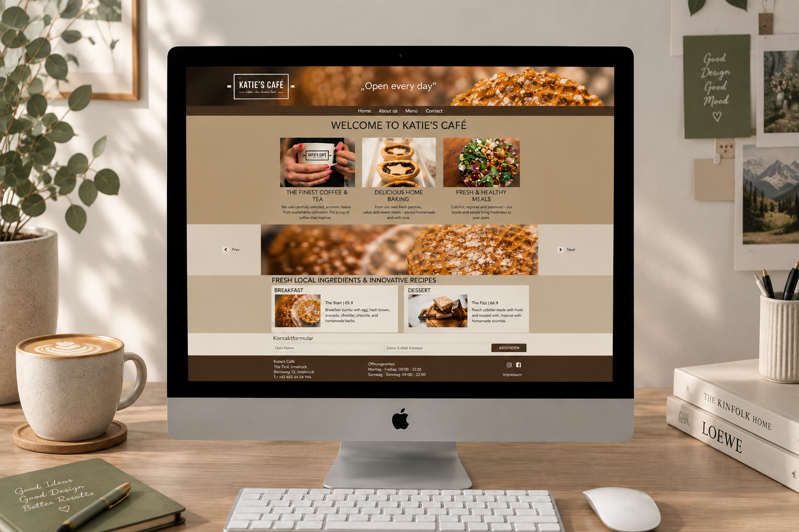

01Katie´s Café
Eine warme, moderne und einladende Atmosphäre steht im Mittelpunkt dieses Webdesigns für Katie’s Café. Die Website wurde entwickelt, um den Charakter des Cafés digital widerzuspiegeln und Besucher mit ansprechenden Bildern und übersichtlich aufbereiteten Informationen willkommen zu heißen. Die Gestaltung kombiniert warme Braun- und Beigetöne mit einer klaren Typografie und hochwertigen Food-Fotografien. Bilder von Kaffee, Frühstück und hausgemachten Speisen stehen dabei im Vordergrund und vermitteln einen gemütlichen und authentischen Eindruck. Gleichzeitig sorgt die klare Aufteilung der Inhalte für eine angenehme Orientierung. Neben dem visuellen Erscheinungsbild wurde Wert auf eine strukturierte und benutzerfreundliche Website gelegt. Informationen zu Speisen, Getränken, Öffnungszeiten und Kontaktmöglichkeiten sind übersichtlich angeordnet und schnell erreichbar. Das Projekt verbindet eine emotionale Bildsprache mit einem klaren Weblayout und zeigt, wie sich die Atmosphäre und Persönlichkeit eines Cafés auch digital vermitteln lässt.